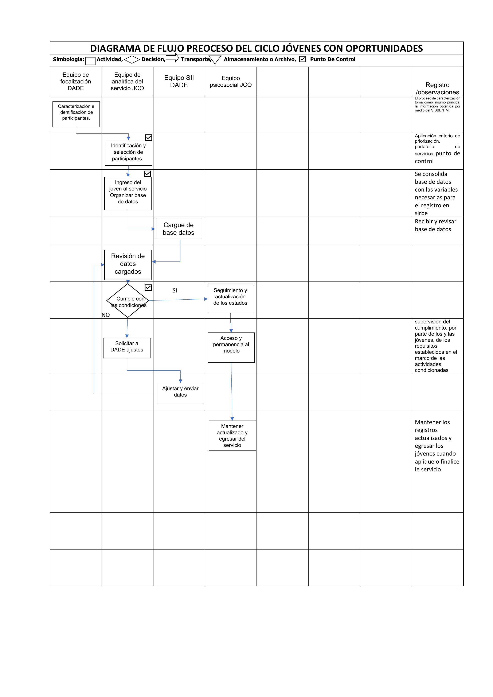

Jóvenes con Oportunidades
Ruta de inclusión social y productiva de la Alcaldía de Bogotá para empoderar a jóvenes de 14 a 28 años en situación de pobreza extrema, moderada o vulnerabilidad, especialmente aquellos que no estudian ni trabajan.
Iniciativa conjunta entre la Secretaría de Integración Social, la Secretaría de Desarrollo Económico, la Secretaría de Educación y la Agencia Atenea.

Línea de tiempo
Trayectoria institucional y evolución de las políticas de inclusión social juvenil en Bogotá: del modelo de emergencia Parceros por Bogotá hacia la estrategia integral Jóvenes con Oportunidades.
A tener en cuenta
Los montos varían según la ruta de formación
Parceros entregaba una cuota fija de $500.000 mensuales durante 6 meses. En Jóvenes con Oportunidades el apoyo económico depende de la ruta elegida: hasta $1.200.000 en cursos cortos, $1.000.000 por ciclo académico más $300.000 por intermediación laboral para quienes terminan bachillerato, o transferencias semestrales de sostenimiento para educación superior. Las transferencias se gestionan a través del sistema Ingreso Mínimo Garantizado (IMG).
Focalización por Sisbén A hasta C09
El servicio está dirigido a jóvenes de 14 a 28 años en situación de pobreza extrema, moderada o vulnerabilidad por inseguridad alimentaria, con puntaje Sisbén entre A y C09. Ambos programas (Parceros y JCO) comparten esta base de focalización.
Parceros se financiaba en parte con Fondos de Desarrollo Local
Una característica clave de la financiación de Parceros por Bogotá es que se sustentaba, en gran parte, con recursos de los Fondos de Desarrollo Local (FDL) de las alcaldías. Esto permitió una inversión territorializada pero condicionada a la disponibilidad de cada localidad. Jóvenes con Oportunidades se articula con presupuesto sectorial y sistema de pagos centralizado.
El cambio de paradigma en la condicionalidad
En Parceros, los jóvenes debían cumplir 48 horas mensuales de servicio a la ciudad para recibir la transferencia, participando en programas distritales como Juntos Cuidamos Bogotá, Escuadrones de Limpieza y Zonas Seguras. Además se formaban durante 100 horas como Agentes Comunitarios de Prevención en salud mental, violencias y consumo. En Jóvenes con Oportunidades este servicio social ya no existe: la condicionalidad se centra exclusivamente en el avance dentro de las rutas de formación y en la búsqueda efectiva de empleo.
Intermediación laboral como etapa formal
La intermediación laboral es una etapa formal y estructural del diseño operativo de JCO. El programa busca que el joven “salga por el último eslabón” con empleo o autonomía económica real, por eso la conexión con el mercado laboral es un componente técnico obligatorio y secuencial, no una actividad opcional o paralela.
- La Secretaría Distrital de Desarrollo Económico (SDDE) lidera el componente de acompañamiento y orientación laboral una vez el joven finaliza su formación.
- Los participantes acceden al Servicio Público de Empleo y a las plataformas de prestadores socios de la estrategia “Talento Capital”, con orientación ocupacional y fortalecimiento de habilidades blandas (socioemocionales y del siglo XXI) para mejorar el perfil competitivo en el mercado formal.
- Incluye una transferencia monetaria única de $300.000 por el logro de la intermediación laboral al finalizar los ciclos académicos.
Equipo
El servicio Jóvenes con Oportunidades es liderado por un comité intersectorial compuesto por la Secretaría Distrital de Integración Social, la Secretaría de Educación, la Secretaría de Desarrollo Económico y la Agencia Atenea. La gestión operativa recae en la Subdirección para la Juventud de la SDIS.
Composición del equipo operativo
El equipo operativo de JCO se organiza en tres grandes componentes que trabajan de manera articulada:
| Componente | Función |
|---|---|
| Psicosocial | Acompañamiento directo a los jóvenes, aplicación del triage y seguimiento al proyecto de vida. |
| Ofertas y alertas | Gestión de oportunidades educativas y laborales; seguimiento a vulneraciones de derechos. |
| Apoyo transversal | Unidades de analítica, referentes metodológicos, gestión documental y equipo jurídico. |
Pilares del programa
1. Acompañamiento psicosocial
Orientación y seguimiento durante todo el tiempo de permanencia en el programa para ayudar a los jóvenes a fortalecer su proyecto de vida y superar retos personales.
2. Rutas de formación
Los participantes eligen entre tres opciones:
Educación para jóvenes y adultos
Para terminar el bachillerato (grados 10° y 11°) en jornadas nocturnas o fines de semana.
Cursos cortos certificados
Formaciones de 40 a 160 horas para adquirir conocimientos técnicos y habilidades prácticas para el empleo.
Educación posmedia de ciclo largo
Acceso a Educación y Formación para el Trabajo (EFT) o educación superior, articulándose con iniciativas como Jóvenes a la E.
3. Acompañamiento a la empleabilidad
Orientación ocupacional y formación en habilidades blandas para conectar a los jóvenes con oportunidades laborales (intermediación laboral).
4. Transferencias monetarias condicionadas
Apoyos económicos de $200.000 a $1.200.000 dependiendo de la ruta de formación elegida. El dinero se entrega por partes a medida que el joven avanza y cumple con sus actividades, a través de operadores financieros o billeteras digitales (Daviplata, Nequi, Movii, Efecty, Dale).
Los 7 módulos de formación en Proyecto de Vida
Como parte del proceso de fortalecimiento de capacidades, todos los participantes cursan siete módulos pedagógicos bajo una metodología de talleres presenciales y vivenciales, estructurados en tres momentos: motivación, teoría y ejercicios prácticos.
Componente psicosocial y el instrumento de triage
El acompañamiento psicosocial es el eje transversal del servicio. Para iniciar la atención, el equipo profesional aplica un instrumento de triage psicosocial que funciona como herramienta de diagnóstico inicial del joven.
¿Para qué sirve el triage?
Flujo de gestión de la información
La gestión de la información de JCO está diseñada para operar con cohortes de más de 5.000 jóvenes que el servicio administra internamente y luego carga en SIRBE, en lugar de registrar cada joven uno por uno.
1. Ingreso masivo por cohortes
DADEEn JCO no se llena una ficha SIRBE individual como en Casas de Juventud o Forjar. El ingreso se realiza mediante el cargue masivo de una base de datos, porque el servicio opera con cohortes grandes de miles de jóvenes focalizados previamente por la Dirección de Análisis y Diseño Estratégico (DADE).
2. Estructura en SIRBE: servicios sociales con modalidades
Equipo psicosocialJCO está parametrizado en SIRBE como “servicio social” (no como curso) y tiene configuradas modalidades que reflejan las rutas del servicio. Todos los jóvenes inician su proceso por la modalidad de Proyecto de Vida y lo finalizan saliendo por Intermediación laboral. La parametrización es estricta: no hay campos de texto abierto, los profesionales seleccionan siempre de listas preestablecidas.
3. Tres tipos de actuaciones
Equipo psicosocialEl seguimiento a los jóvenes se registra en SIRBE con tres tipos de actuación:
- Estado: situación actual del joven (en atención, suspendido, transferido o retirado).
- Intervención: registra si el joven cumplió o incumplió las condiciones para autorizar el pago de la transferencia monetaria.
- Seguimiento: registra el paso del joven entre modalidades dentro de su ruta.
4. Analítica propia del servicio
Equipo de analíticaLa información oficial del servicio es gestionada directamente por el equipo de analítica de JCO mediante bases de datos propias.
Diagrama de flujo del proceso
Representación visual del ciclo de recolección y digitación en SIRBE para Jóvenes con Oportunidades.
